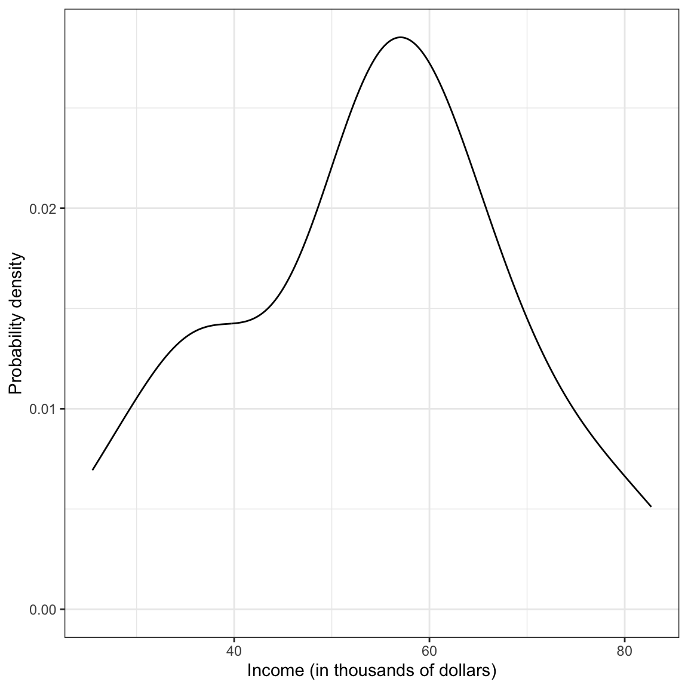
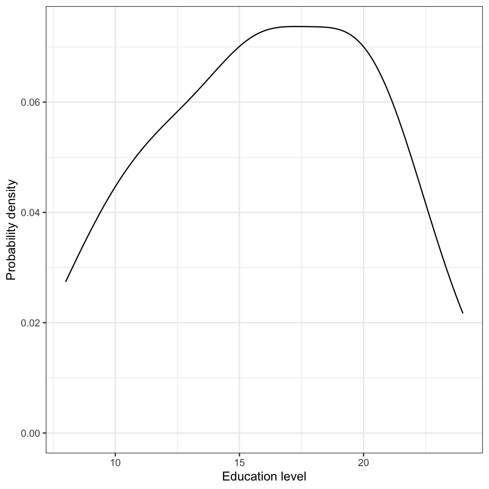
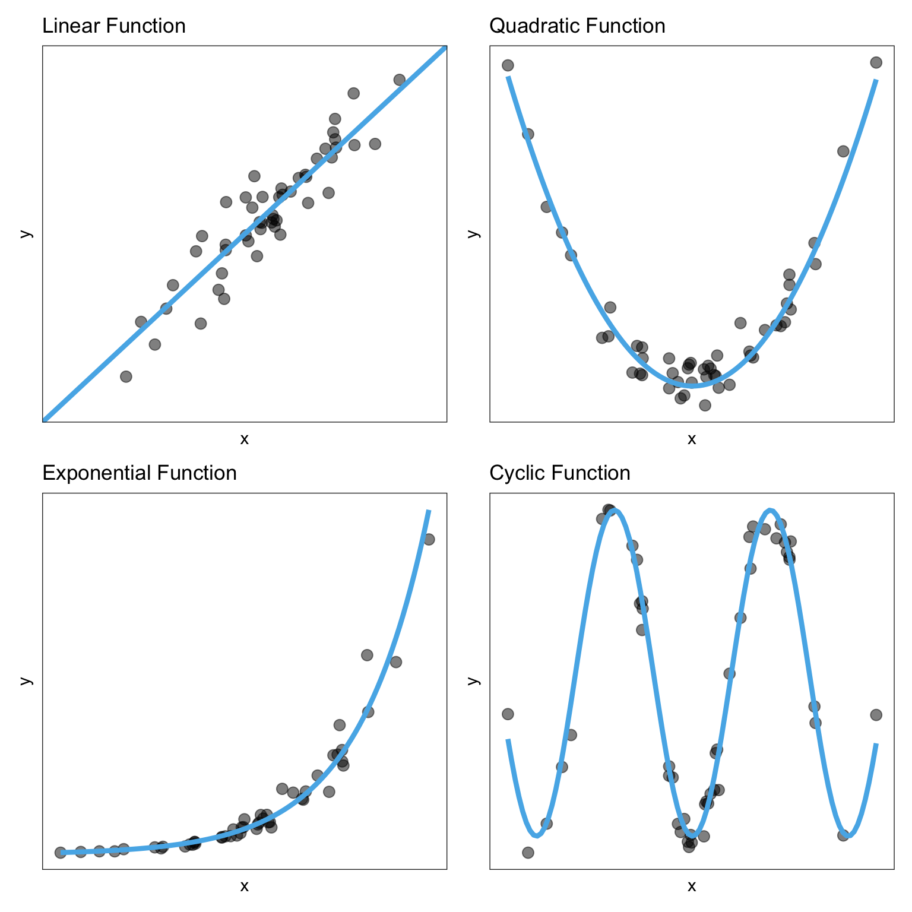
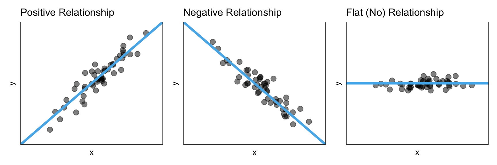
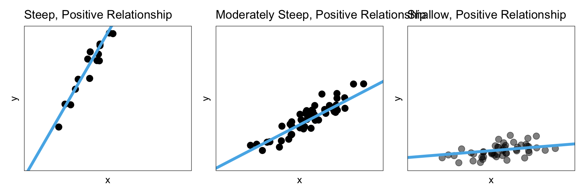
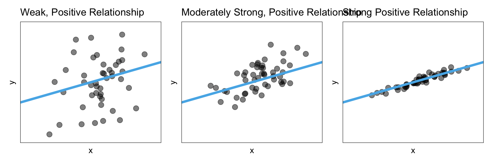
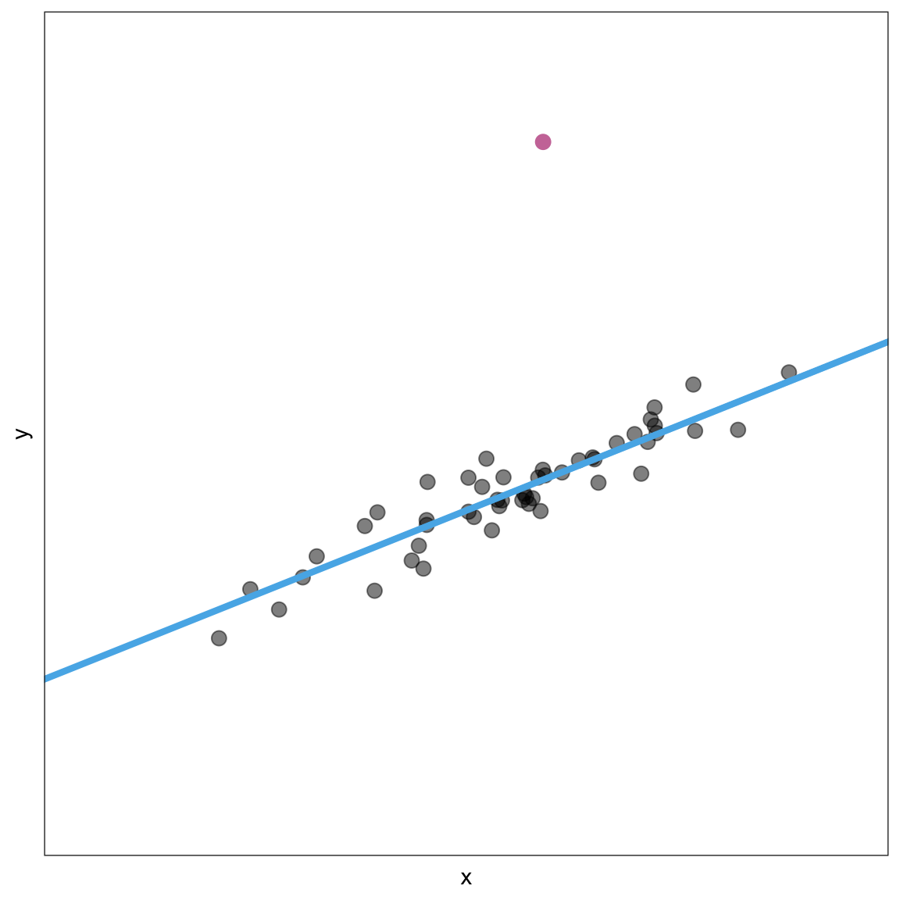
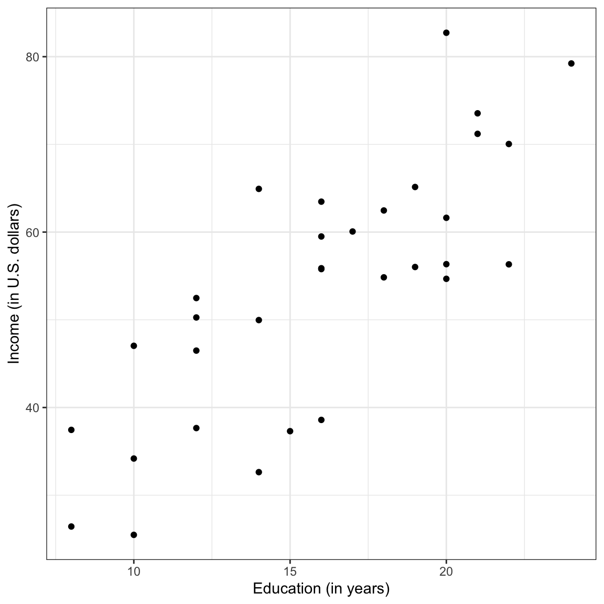
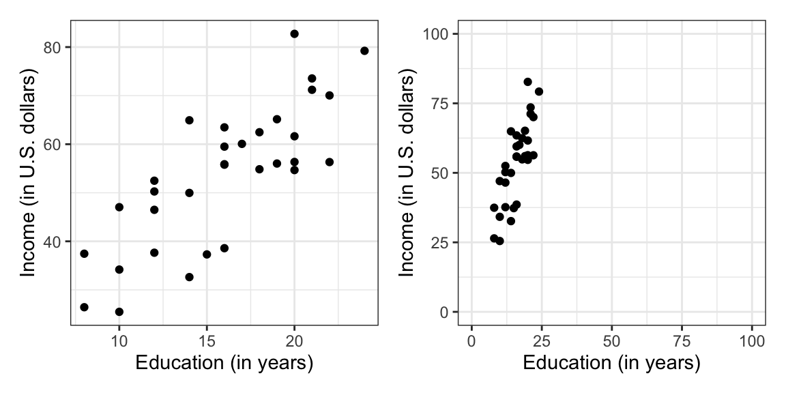

# Load libraries
library(corrr)
library(dplyr)
library(ggplot2)
library(readr)
# Import data
city = read_csv(file = "https://raw.githubusercontent.com/zief0002/modeling/main/data/riverview.csv")
#View data
city6 Data Exploration for Regression
In this set of notes, you will begin your foray into regression analysis. To do so, we will use the riverview.csv data to examine whether education level is related to income. The data contain five attributes collected from a random sample of \(n=32\) employees working for the city of Riverview, a hypothetical midwestern city (see the data codebook). To begin, we will load several libraries and import the data into an object called city.
Any analysis should start with an initial exploration of the data. During this exploration, you should examine each of the variables that you will be including in the regression analysis. This will help you understand the results you get in later analyses, and will also help foreshadow potential problems with the analysis. This blog post describes initial ideas of data exploration reasonably well. You could also refer to almost any introductory statistics text for additional detail.
It is typical to begin by exploring the distribution of each variable used in the analysis separately. These distributions are referred to as marginal distributions. After that, it is appropriate to explore the relationships between the variables.
6.1 Marginal Distribution of Income
To begin this exploration, we will examine the marginal distribution of employee incomes. We can plot a marginal distribution using functionality from the {ggplot2} package.
ggplot(data = city, aes(x = income)) +
stat_density(geom = "line") +
theme_bw() +
xlab("Income (in thousands of dollars)") +
ylab("Probability density")
This plot suggests that the distribution of employee incomes is unimodal with a little bit of positive (right) skew. Most of the incomes are between roughly $50,000 and $70,000. The smallest income in the sample is about $25,000 and the largest income is over $80,000. This indicates there is a fair amount of variation in the data. A typical income looks to be about $55,000.
When describing the marginal distribution of a variable, you want to describe three features: the shape of the distribution, typical value(s) in the distribution (i.e., “center”) and the variability in the distribution.
To further summarize the distribution, it is typical to compute and report summary statistics such as the mean and standard deviation. One way to compute these values is to use functions from the {dplyr} library.
city |>
summarize(
M = mean(income),
SD = sd(income)
)Describing this variable we might write,
The marginal distribution of income is unimodal with a mean of approximately $53,700. There is variation in employees’ salaries (SD = $14,500).
6.2 Marginal Distribution of Education Level
We will also examine the marginal distribution of the education level variable.
# Plot
ggplot(data = city, aes(x = education)) +
stat_density(geom = "line") +
theme_bw() +
xlab("Education level") +
ylab("Probability density")
# Summary statistics
city |>
summarize(
M = mean(education),
SD = sd(education)
)Again, we might write,
The marginal distribution of education is unimodal, and roughly symmetric with a mean of 16 years. There is variation in employees’ level of education (SD = 4.4).
6.3 Relationship Between Variables
Although examining the marginal distributions is an important first step, those descriptions do not help us directly answer our research question. To better understand any relationship between income and education level we need to explore how the distribution of income differs as a function of education. To do this, we will create a scatterplot of income versus education.
ggplot(data = city, aes(x = education, y = income)) +
geom_point() +
theme_bw() +
xlab("Education (in years)") +
ylab("Income (in U.S. dollars)")
The plot suggests a relationship (at least for these employees) between level of education and income. When describing the relationship we want to touch on four characteristics of the relationship:
- Functional form of the relationship
- Direction
- Strength
- Observations that do not fit the trend (outliers)
6.3.1 Functional Form of the Relationship
A functional form refers to the algebraic (mathematical) description of the relationship between the two attributes included in the relationship. Common functional forms used in the social and educational sciences are linear, quadratic, exponential, and cyclical (e.g., sinusoidal). Figure 6.1 shows examples of these four functional forms.

Note that the data in a scatterplot won’t follow these patterns perfectly, but you want to pick out the general form of the function. In our example, the relationship between education level and income seems linear.
6.3.2 Direction/Trend
Once we pick the functional form, the next thing we want to do is identify the direction/trend of the relationship. The direction/trend describes the overall “slope” of the data and can be positive, negative, or flat. Figure 6.2 shows examples of a positive, negative, and flat linear relationship.

A positive relationship would imply that lower values of x are associated with lower values of y and higher values of x are associated with higher values of y. A negative relationship, on the other hand, would imply that lower values of x are associated with higher values of y and higher values of x are associated with lower values of y. A flat relationship implies there is no relationship between x and y since all values of x are associated with the same y value.
When you describe what the direction/trend implies, be careful about the language you use. For example, we would not want to say “when x goes up, y goes up” when describing a positive relationship. This is because that statement is not true for all of our cases. The trend describes the general pattern in the relationship, which does not apply to all cases. That is why we use the wording “is associated with”, which to other researchers indicates the general pattern. Other ways to describe a positive relationship would be that:
- On average, higher values of x correspond to higher values of y.
- Observations that have higher values of x tend to have higher values of y.
6.3.3 Magnitude
The magnitude of the relationship constitutes a description of the magnitude of change in the y-values for a given change in the x-values. Is an increase in x associated with a small change in the y-values? A big change in the y-values?
To better understand this, consider the three linear relationships in Figure 6.3. All three relationships depicted have a positive relationship; higher values of x are associated with higher values of y. However, the magnitude of change in the y-values is quite different as we increase x in these plots.

In the left-hand panel, the magnitude of the relationship is quite large. Not only are higher values of x are associated with higher values of y, but those y-values are a lot larger for higher values of x. We can see this in the high degree of steepness of the line.
Compare that to the middle panel where, again, higher values of x are associated with higher values of y, but the magnitude of the change in the y-values is much smaller. That is, the line in the middle panel is less steep. Finally, in the right-hand panel, again, higher values of x are associated with higher values of y, but now the magnitude of change in the y-values is very small. Here, the slope of the line is very shallow.
6.3.4 Strength
The strength of the relationship describes how well the data adhere to the functional form. For example a strong linear relationship would be one in which the observations lie close to the line. Figure 6.4 shows three positive linear relationships, one that has weak, one that is moderate, and one that is strong.

As you describe the strength of a relationship, know that the qualifiers ‘weak’, ‘moderate’, and ‘strong’ are somewhat subjective. For now, use your best judgment.
After positing the functional form, put that line or curve on the scatterplot in your mind. This will help you better consider and describe the strength of the relationship. In a later chapter, we will actually learn how to do this in R.
6.3.5 Potential Outliers
Lastly, you also want to identify any observations that do not fit the trend. These are potential outliers. For example, the reddish, purple observation is Figure 6.5 would be a potential outlier.

Remember, we identify potential outliers because they have extreme values (either high or low) relative to the other observations in the data. In a scatterplot, there are now two dimensions that an observation can be extreme on:
- A potential outlier might have an extreme x-value.
- A potential outlier might have an extreme y-value.
- A potential outlier might have both an extreme x-value and an extreme y-value.
When we identify potential outliers, we do so by referencing their coordinates in the scatterplot. For example, to describe the reddish, purple observation that is a potential outlier in Figure 6.5, we might say,
The observation with the coordinates (6, 17) is a potential outlier. This observation has a very large y-value relative to the other observations in the data.
6.3.6 Back to the Example
Let’s return to the scatterplot showing the relationship between education level and income and use what we have learned to describe that relationship using the context of the data.
ggplot(data = city, aes(x = education, y = income)) +
geom_point() +
theme_bw() +
xlab("Education (in years)") +
ylab("Income (in U.S. dollars)")
The scatterplot suggests that there is a positive, linear relationship between education level and income for the 32 employees in our sample. This suggests that employees that have higher education levels tend to also have higher incomes. The magnitude of the relationship seems large as the slope of the relationship seems quite steep, indicating that even small changes in education level are associated with a big change in income. This relationship seems moderately strong, with the data clustered somewhat close to the line that describes this relationship. Lastly, there do not seem to be any potential outliers or extreme observations in the data.
6.4 Plot Scale and Human Perception
One issue that arises when we describe the magnitude and strength of the relationship is that our guesstimate for both the magnitude of the effect and the strength of the relationship can be influenced by the x- and y-scale on our scatterplot. To illustrate this, Figure 6.6 shows a plot of the relationship between education level and income data with two different scales on the axes.

In the right-hand graph of Figure 6.6, we may perceive a stronger relationship than in the left-hand graph. We would also perceive that the magnitude of the effect (i.e., the slope of the linear function) is larger, that is the line looks steeper. This is problematic as the strength of the relationship is exactly the same in both graphs as it is the same data that is plotted.
Because of this, we often compute and report a numerical summary measures to quantify both the strength and the magnitude of the relationship. These measures are useful as they are not impacted by the scale we use to plot the data. In the next chapter, you will learn how to quantify the magnitude of the effect and the strength of the linear relationship.